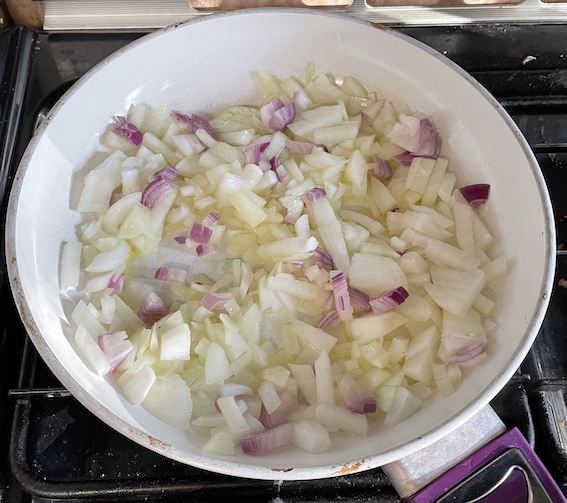
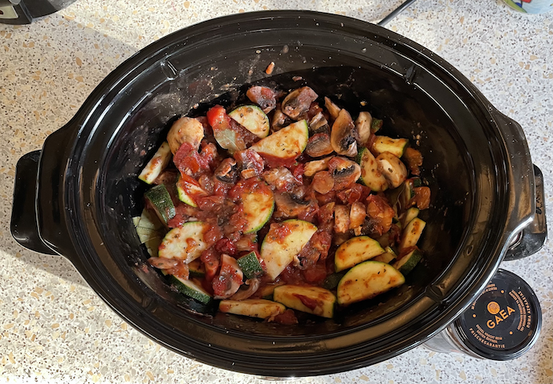

Kalamata olive, tuna, & feta pasta
Noteser
- Chop olives and add back to jar
On hob
- Fry till soft
- olive oil
- 2 medium onions
- 3 cloves garlic
- Add and simmer for 10 mins
- 2 tins of tomatoes
- 8 mushrooms chopped
- 1 tbsp tomato puree
- 1 tbsp basil
- 1 tbsp oregano
- 6 bay leaves
- Add and simmer for 10 mins
- 2 courgettes chopped into semi-circles
- Add and simmer for 10 mins
- 1 jar kalamata olives, halved and destoned
- ½ tsp fish sauce
- Add and simmer for 10 mins
- Add
- 1 pack feta, chopped into cubes
Slow cooker
- Fry onions and garlic
- Add tomatoes and mushrooms and heat
- 0:00 Starting cooking onions, tomatoes & mushrooms
- 1:30 Add corgettes & herbs
- 2:30 Add olives
- 3:00 Add tuna
- 3:30 Add feta

